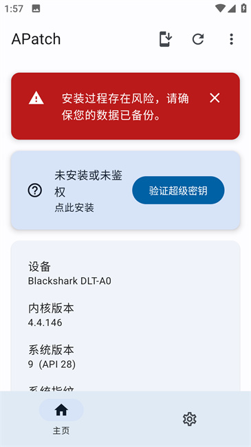
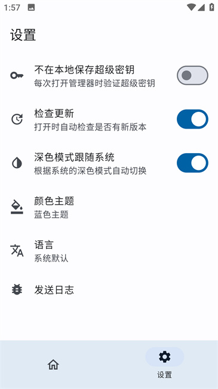

APatch 值不值得折腾？一份刷机老手的迁移账本
从 Magisk 迁移到 APatch 的真实账：root 检测绕过的成功率、内核级修补的兼容性、模块生态的缺口，分三类人算清楚时间成本到底省在哪又亏在哪。
开头先抛问题
它到底值不值得掏钱——不对，APatch 是免费开源的，没付费版。但我要说的不是钱，是时间账。
从 Magisk 迁过来这件事，前前后后花了我大概一个周末：提取 boot、修补、刷入、验证超级密钥、把原来装的七八个模块逐个重新适配。如果算上中间 bootloop 救砖那次，接近十六小时。这些时间到底值不值？
这篇账本就是把这笔账算透——为什么有些人迁完直呼爽，有些人折腾完说不如老老实实用 Magisk。
先把 APatch 到底是什么说清楚
APatch 是一个 Android root 方案，它的官网上有完整的功能清单和技术原理说明。和 Magisk 走的是完全不同的技术路线：
Magisk 修改的是 boot 镜像里的 ramdisk 和 init 系统，root 在用户空间。APatch 直接 patch 内核，root 在内核层面生效。这条根本差异决定了它几乎所有的优缺点。
简单说：Magisk 是"从外面往系统里塞个后门"，APatch 是"直接在地基上开个暗门"。

定价拆解——哦不对，没有定价
APatch 全功能免费，没有 Pro 版、没有订阅、没有解锁高级功能。GitHub 上 clone 下来就能编译，管理器 APK 可以从下载页面拿到。
那账要怎么算？按功能边界算时间账：APatch 给你省了哪些以前要手动解决的麻烦，又给你新增了哪些以前不存在的工作量。
免费版给什么（也就是全部给什么）：
- 内核级 root，没有 su 二进制、没有守护进程、没有 magisk 属性——这些 SafetyNet/Play Integrity 最爱检测的痕迹全部不存在
- 和 Magisk 几乎一样的安装流程：提取 boot → 修补 → 刷入，A/B 分区 OTA 保 root 机制直接沿用 Magisk 的成熟方案
- 兼容大部分 Magisk 模块（APM 模块格式来自 KernelSU，和 Magisk 模块高度兼容）
- 额外的 KPM 内核模块系统，能做 Magisk 模块做不到的事：inline-hook、syscall-hook、文件访问拦截
- 超级密钥机制：密钥错了静默返回，App 尝试探测 SuperCall 不会有任何反馈
没有的东西（不是阉割，是生态还没跟上）：
- Shamiko 不能用——Shamiko 是闭源的 Magisk 模块，它 hook 的是 Magisk 内部 API 和 su 守护进程，APatch 里根本没有这些东西。官方明确说：强行装上去可能 bootloop
- Riru 也不兼容——Riru 假设 boot 的 ramdisk 有特定结构，APatch 修补内核后这个结构变了
- 某些 Magisk 独家模块没有 APatch 版替代品——比如一些非常老的模块，作者已经停更
算账——分三类人
轻度用户：偶尔 root 一下，主要用 LSPosed
典型画像：手机一年 root 一次，装个 LSPosed 改改状态栏布局、装个 YouTube ReVanced，剩下时间 root 放着不用。
免费版够不够？ 完全够。
迁移成本：设备提取 boot + 刷入 + 模块重配，大概两到三小时。
时间账：省了什么？Magisk 上 LSPosed 有时候会被 SafetyNet 误伤（su 二进制被检测到），APatch 原生隐身，这个问题直接消失。亏了什么？几乎没有——如果只装 LSPosed，Magisk 生态的那些花里胡哨的模块你本来也用不上。
结论：轻度用的话，花两小时迁一下，换来一个更干净的 root 环境，值。 尤其如果你用的是 MIUI/HyperOS，APatch 对内核的兼容比 Magisk 在某些新设备上更稳。
主力用户：日常用 root，银行、游戏、MDM 都要过检测
典型画像：手机里同时装着招商、浦发、三家本地银行，一个原神（需要过检测才能用修改器），还有公司的企业 MDM。Magisk + Shamiko 组合在某些场景已经开始被识破，每次都要手动折腾 Hide My Applist、改 build.prop。
免费版够不够？ 不仅够，而且是目前最好的方案。
迁移成本：前面说的两到三小时基础成本 + 原来依赖 Shamiko 的部分换 KPM 或 LSPosed root 隐藏模块（多花一到两小时找适配），总计四到五小时。
时间账：这是 APatch 最能打的场景。原来 Magisk + Shamiko 每月可能要花两到三小时应对各种检测绕过（银行 App 升级了、游戏更新了、Play Integrity 检测加强了），迁到 APatch 后这些麻烦基本消失——SuperCall 密钥错了静默返回、没有 su 二进制可以被检测、build.prop 里没有 magisk 属性。按每月省两小时算，半年就回本了。
但有一个坑要提前说：APatch 修补 boot 时默认不备份原厂 boot.img（Magisk 会）。MIUI/HyperOS 用户如果在 OTA 前忘了手动恢复原厂 boot，会导致系统校验失败，强制用全量包重刷——这一下就是两到三小时。所以如果你是主力用户，记得养成 OTA 前恢复原厂 boot 的习惯。

重度用户：模块狂魔，装了 Magisk 生态最偏门的那些东西
典型画像：Magisk 上装了超过二十个模块，其中五个是 xda 论坛里只有作者自己在用的小众模块，三个是需要 Riru 注入的 Zygisk 模块，还有两个是 Shamiko 的配置变体。
免费版够不够？ 大概率不够。
迁移成本：基础成本四小时 + 逐个检查模块兼容性的时间（每个模块平均半小时，二十个就是十小时）+ 找到替代品或手动移植的时间（完全不可控，有些模块可能找不到替代品）。总投入可能超过二十小时。
时间账：这部分人迁过去能得到什么？如果你的场景里有银行、游戏、MDM 这些需要过检测的，那核心收益还是在。但如果你主要是折腾各种 UI 模块、内核调校模块，Magisk 生态的成熟度是 APatch 目前比不了的——近十年发展出来的模块覆盖面，不是一个才出来两年的方案能追上的。
还有一个硬伤：某些 OEM 在内核编译时关闭了 CONFIG_KALLSYMS，KernelPatch 拿不到内核符号，APatch 直接装不上。虽然这种情况不多（主要在非常老旧或极度精简的设备上），但如果踩中了就是白折腾一整天。可以先去APatch文档查查你的设备在不在兼容列表里。
结论：重度用户先别急着迁。可以在备用机上试一下，或者等 APatch 生态再成熟一年。 除非你有明确的 root 检测绕过需求，否则现在迁纯粹是给自己找活干。
替代方案——不迁有什么别的路
说三种：
继续用 Magisk + Shamiko。这是目前最省事的方案，前提是你的场景还没被 Play Integrity v3 完全封死。但要注意 Magisk v21 后官方已经停更，后续更新全靠社区，某些新设备的兼容性问题可能越来越多。
用 KernelSU。和 APatch 一样是内核级 root 方案，同样比 Magisk 更隐蔽。两者技术路线接近，但 KernelSU 依赖内核自带的 su 实现，APatch 用的是自己的 SuperCall 机制——各有千秋，KernelSU 生态稍微成熟一点，APatch 的超级密钥设计更安全。
不 root，用虚拟机。VMOS、51虚拟机这类方案，手机里再跑一个 Android，root 直接给你开好了。缺点是性能损失比较大、某些 App 还是能检测到虚拟机环境，但好处是不折腾、不怕砖。适合偶尔用 root 功能、不想折腾刷机的人。
最后给个可执行的结论
对照自己的使用强度，三秒对号入座：
- 闭眼迁：有银行 App、游戏、企业 MDM 这些 root 检测场景 + 只用 LSPosed 或少量主流模块的用户。APatch 在检测绕过上的优势是实打实的，省下的时间半年内就能覆盖迁移成本。
- 再等等：重度模块用户 + 依赖小众 Riru/Shamiko 模块的用户 + 设备内核可能没有
CONFIG_KALLSYMS的用户。现在迁纯粹增加维护成本，等生态成熟再动。 - 永远不用迁：只用 root 改改状态栏、装装 ReVanced，完全不碰银行和游戏的用户。Magisk 目前还能打，没必要为了"更先进"的技术路线额外花时间。

写到这里突然发现一个没提到的点——CI 构建版。APatch 除了正式发布版，GitHub Actions 每天都会产出 Nightly 构建，更新更频繁但稳定性稍差。如果你遇到了正式版没有的问题（比如某个特定内核版本兼容性差），可以试试 CI 版，有时候问题就是最新 commit 修的。
总之，APatch 不是什么"革命性的新一代 root 方案"，它是一个务实的选择——在 root 检测越来越严的大环境下，用一个更隐蔽的内核级方案，换掉 Magisk 那些越来越容易被识破的用户空间痕迹。值不值这笔账，全看你在检测绕过上花了多少冤枉时间。
另外提一句，APatch 这套资料我在GitHub、Gitee和GitCode都放了一份，国内访问的话 Gitee 会快很多。